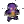

| - | Character | Speed | - | - | Score | - |
|---|---|---|---|---|---|---|
| Aria | 19:47.77 | 897th | 5930 | 221st | ||
| Bard | 21:14.45 | 3412th | 6064 | 3395th | ||
| Bolt | 16:19.04 | 903rd | 5300 | 130th | ||
| Cadence | 14:34.93 | 2194th | 7128 | 3025th | ||
| Diamond | 26:56.19 | 3410th | 7211 | 326th | ||
| Dorian | 26:51.62 | 1621st | 3762 | 327th | ||
| Dove | 9:51.83 | 1399th | 345 | 3014th | ||
| Eli | 33:15.81 | 2543rd | 5379 | 146th | ||
| Mary | - | - | 914 | 3457th | ||
| Melody | 28:16.12 | 4725th | 6360 | 772nd | ||
| Monk | 23:10.09 | 732nd | 4753 | 1673rd | ||
| Nocturna | 13:19.82 | 720th | 8344 | 3175th | ||
|  | Tempo | 12:55.86 | 1420th | 5753 | 315th | |
| Coda | - | - | - | - | ||
| Story | 1:59:06.82 | 609th | 28765 | 51st | ||
| 9char | - | - | 11869 | 345th | ||
| 13char | - | - | - | - |
| Speed | ||||||||||||||
| Hard | - | - | - | - | - | - | - | - | - | - | - | 40:40.783141st | - | - |
| NR | - | 20:13.67146th | - | - | - | - | - | - | - | - | - | - | - | - |
| Rando | - | - | - | 31:59.36993rd | - | - | - | - | - | - | - | - | - | - |
| Phasing | - | - | - | 25:10.33520th | - | - | - | - | - | - | - | - | - | - |
| Mystery | - | - | - | 30:54.98347th | - | - | - | - | - | - | - | - | - | - |
| Low | - | - | - | - | - | - | - | - | - | - | - | - | - | - |
| Speed | |||
| Low | - | - | - |
| Score | ||||||||||||||
| Hard | - | - | - | - | - | - | - | - | - | 2761126th | - | 38983281st | - | - |
| NR | - | 5228115th | - | 4710429th | 111285th | - | - | - | - | - | - | - | - | - |
| Rando | - | - | - | 7705539th | - | - | - | - | - | - | - | - | - | - |
| Phasing | - | - | - | 5326226th | 34667th | - | - | - | - | - | - | - | - | - |
| Mystery | 39961st | - | - | 616160th | 651306th | - | - | - | - | - | - | - | - | - |
| Deathless | 0-2-4116th | - | - | 2-5-51260th | 1-1-371st | - | - | - | - | - | - | 0-1-3721st | - | - |
Last Updated:2022/08/03 07:45